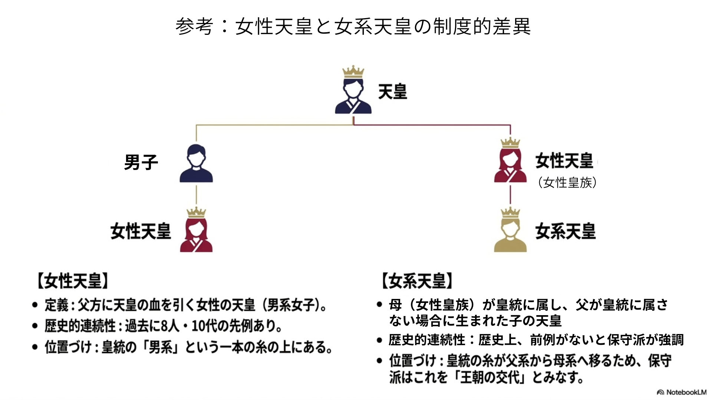

「不用意な一言」が示すもの
二〇二六年四月三日、中道改革連合の小川淳也代表が記者会見を開き、「女性天皇を生きているうちに見てみたい」と述べた三月二十七日の発言を撤回した。「言葉のハンドリングを誤った。不用意な一言」と謝罪し、「将来的に女性天皇の議論があっていいが、漸進主義的でなければならない」と取り繕ったが、何が問題だったかを自らの言葉で正面から説明しないまま幕を引いた。
注目すべきは発言の軽さではない。撤回の理由にある。同氏は制度の核心を「再考」して引いたのではない。党内から「とんでもない、軽々に言っていいことではない」という批判が上がり、政治的コストを計算して言葉を回収した。皇室を論ずるとき、政治家は言葉の正確さより受け止められ方を優先する。それが積み重なって、重要な区別が誰からも説明されないまま議論が進む。「不用意な一言」という釈明は、何が問題だったかを明かさない。この不誠実こそが、現在の皇位継承議論が抱える最大の病理だ。
八割は何に賛成しているのか
四月十五日、衆参両院の正副議長と十三の政党・会派が参加する全体会議が約一年ぶりに再開された。森英介衆院議長は「今国会中に皇室典範改正まで行いたい」と述べ、五月中旬を目処に各党の見解集約を求めた。次世代の継承資格者が悠仁親王殿下お一人という現実は、もはや先送りを許さない。こうした切迫感の中で、「女性天皇への賛成は八割を超える」という数字が、改革を急ぐ根拠として繰り返し引用されている。
だが立ち止まれ。その八割は、何に賛成しているのか。
毎日新聞の調査（二〇二六年三月）では女性天皇への「賛成」が六十一パーセント。共同通信の調査では「女系天皇」への賛成が合計八十四パーセントに達したとされる。政治家はこれを「民意」として振りかざすが、この数字には致命的な問いが欠けている。回答者は「女性天皇」と「女系天皇」を区別した上で答えているか——その一点だ。問いの精度が決断の精度を決める。皇位継承は一度変えたら元には戻せない問題だからこそ、問いの設計が問われなければならない。
「女性天皇」と「女系天皇」は全く別の問題だ
この二つは、似て非なる制度概念だ。女性天皇とは、男系の血を引く女性が即位することを指す。推古天皇、持統天皇、元明天皇、元正天皇、孝謙（称徳）天皇、明正天皇、後桜町天皇——歴代八人の女性天皇は全員が父または祖父を天皇に持つ「男系女子」だった。飛鳥時代から江戸時代後期まで、即位者が女性であっても皇統の父系連続性は一度も断たれていない。女性が天皇になることと、母系で皇統をつなぐことは、全く別の問題だ。
これに対し、女系天皇とは、天皇の血を引く母から生まれた子が即位することを意味する。父は一般国民でよく、父系の連続性はそこで途絶える。歴史上、前例は一度もない。継承順位の微調整ではなく、皇統原理そのものの変更だ。百二十六代にわたる父系連続性の断絶——制度論上は王朝交代に等しい。「女性天皇」と「女系天皇」は、同じ「女性」という文字を含みながら、全く異なる歴史的・制度的意味を持つ。

区別を示さない問いは誘導だ
では、世論調査はこの区別を示しているか。「女性天皇に賛成ですか」と問われた回答者の多くは、愛子内親王殿下のお姿を念頭に答えているはずだ。内親王は男系女子であり、歴史上の女性天皇と同じ文脈に位置する。問いが「女系天皇」に差し替わったとき、その含意——父が一般人であり、母系で皇統をつなぐ原理転換——を正確に把握した上での回答がどれほど含まれているか。区別を示さない問いは、区別のない回答を生む。その数字を「国民が望んでいる」と語ることは、調査という形式を借りた誘導だ。小川代表が問いを整理しないまま「見てみたい」と語り、批判を受けて「不用意」と撤回した一連の流れは、この誘導の中を政治家が漂流している姿にほかならない。
保守陣営がこの区別を語ってこなかった責任も問われる。「支持が高い」という数字が出るたびに、保守政治家はしばしば二つの反応のいずれかを取ってきた。「時期尚早」と言って論点をずらすか、世論の数字を前に沈黙するかだ。しかしどちらも、問いに答えていない。「女性天皇と女系天皇は何が違うのか」という問いを、国民に正面から届ける仕事を怠ってきた。その空白に、誘導的な設問設計が入り込んだ。
語ることが保守の義務だ
保守政治が今すべきことは、この誘導に沈黙で応じることではない。語り抜くことだ。保守主義は守旧主義ではない。守るべき核心を見極め、その核心が生き残るために必要な変化を、自らの言葉で説明し正当化できる態度こそが保守の本領だ。守るべきものと変えるべきものを峻別する。その峻別を世論調査の数字に委ねることは、保守の自殺行為だ。
高市政権が第一優先とする「旧宮家男系男子の養子縁組による皇籍取得」と「女性皇族の婚姻後身分保持」の組み合わせは、女系継承という根本転換を当面回避しながら皇族数の空洞化に対応する、現実的かつ保守的な解法だ。秋篠宮皇嗣殿下、悠仁親王殿下への継承順位を動かさず、男系原則を堅持しつつ制度基盤を補強する。女性皇族の婚姻後身分保持は公務と祭祀の担い手を確保するためであり、配偶者と子は皇族としない——女系継承への入口を封じる限定設計だ。この方式への反論にも、逃げずに答えなければならない。旧宮家の方々が戦後八十年近く民間に生きてきた事実は重く、憲法十四条との整合性も問われる。それでも、この案が正当である理由を、歴史的系譜と制度趣旨から語れるかどうか。それが保守政治家に課されている責任だ。
「世論が八割だから」と黙って頭を垂れることを謙虚と言ってはならない。世論に問うべきことと、問うべきでないことがある。政権は選挙によって民の信任で成り立つが、百二十六代にわたる皇統の原理は、一時の多数決によって変えていい問題ではない。その問いの重さを感知できない政治に、皇室を守ることはできない。国民は説明を受ける権利がある。保守はその説明をする義務がある。